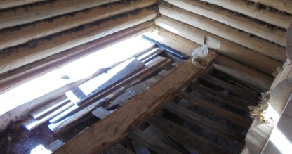
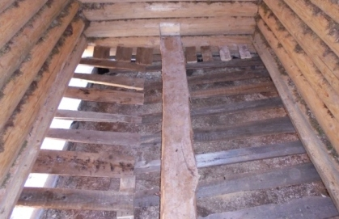
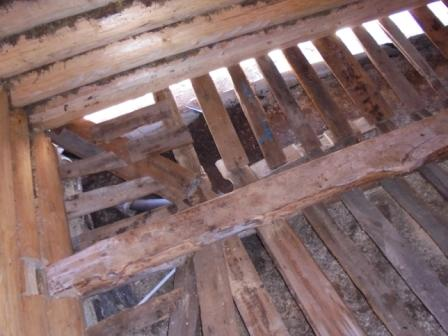

- Главная
- Cруб
- Выпиливание входной двери
- Двери
- Монтаж слива парной
- Основание первого уровня пола
- Обрешётка первого уровня пола
- Тепло и гидроизоляция в парной
- Основной пол в парной
- Окно в предбаннике
 Обрешётка пола первого уровня.
Обрешётка пола первого уровня.
Обрешётка пола первого уровня.
Обрешётка пола первого уровня.

Доски первого уровня пола крепятся под уклоном. Так, что бы вода со всей парной стекала в одну точку - к началу сливной трубы.
Генаральный уклон обеспечивает жердь. Установленная у входа на один кирпич, а в глубине парной на два кирпича.
Дальняя сторона парилки оборудована коротким уклоном. Слив, проходящий параллельно полубрусу, расположен ближе к внешней стене бани.
Более сложная конструкция у кроткой ближайшей к входу стены парилки. Ведь там необходимо потоки воды свести в одну точку. Для этого, с углов прокладываются несущие доски, а на них укладываются короткие.
